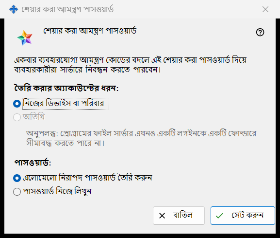
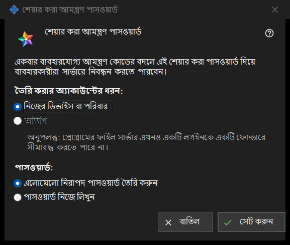

শেয়ার করা আমন্ত্রণ পাসওয়ার্ড
এটি কীসের জন্য
এই উইন্ডো ব্যবহারকারীদের একবার ব্যবহারের আমন্ত্রণ কোডের বদলে একটি শেয়ার করা পাসওয়ার্ড দিয়ে সার্ভারে নিবন্ধন করতে দেয়। এক্সচেঞ্জ সার্ভার সেটিংসের আমন্ত্রণসমূহ গ্রুপে শেয়ার করা আমন্ত্রণ পাসওয়ার্ড চেকবক্সে টিক দিয়ে, অথবা তার পাশের বোতাম শেয়ার করা পাসওয়ার্ড সেট করুন.. দিয়ে এটি খুলুন।


এই ক্রমে
- অ্যাকাউন্টের ধরন বেছে নিন।
- ঠিক করুন, পাসওয়ার্ড প্রোগ্রাম তৈরি করবে, নাকি আপনি নিজে লিখবেন।
- সেট করুন চাপুন।
- পাসওয়ার্ড তৈরি করা হলে, যে উইন্ডো তা একবার দেখায় সেখান থেকে কপি করুন।
- এটি গ্রহণ করা বন্ধ করতে চেকবক্স শেয়ার করা আমন্ত্রণ পাসওয়ার্ডের টিক তুলে দিন এবং নিশ্চিত করুন।
উপাদানসমূহ
অ্যাকাউন্টের ধরন
তৈরি করার অ্যাকাউন্টের ধরন: ঘরে বিকল্প হিসেবে আছে নিজের ডিভাইস বা পরিবার ও অতিথি। অতিথি বন্ধ থাকে এবং এর নিচের লাইনে কারণ লেখা: প্রোগ্রামের ফাইল সার্ভার একটি লগইনকে একটি ফোল্ডারে সীমাবদ্ধ করতে পারে না। শেয়ার করা পাসওয়ার্ড আগে থেকেই চালু থাকলে তার বর্তমান ধরন আগে থেকে নির্বাচিত থাকে। সেই বর্তমান ধরন অতিথি হলে বোতাম সেট করুন বন্ধ থাকে; তবুও শেয়ার করা পাসওয়ার্ড বন্ধ করা যায়।
পাসওয়ার্ড
পাসওয়ার্ড: ঘরে দুটি বিকল্প আছে: এলোমেলো নিরাপদ পাসওয়ার্ড তৈরি করুন (ডিফল্টভাবে নির্বাচিত) ও পাসওয়ার্ড নিজে লিখুন। সেট করুন চাপার পরে নিজে লেখা পাসওয়ার্ড একটি পাসওয়ার্ড উইন্ডোতে চাওয়া হয়, যা নিয়ম যাচাই করে: অন্তত 10টি অক্ষর, যার মধ্যে একটি বড় হাতের লাতিন অক্ষর, একটি ছোট হাতের লাতিন অক্ষর ও একটি অঙ্ক থাকবে। সেই উইন্ডো বাতিল করলে আপনি এখানে ফিরে আসেন।
সেট করুন
বোতাম সেট করুন পাসওয়ার্ড ও অ্যাকাউন্টের ধরন সার্ভারে পাঠায় এবং শেয়ার করা পাসওয়ার্ড চালু করে। তৈরি করা পাসওয়ার্ড একবার আলাদা উইন্ডোতে দেখানো হয়: সেখানেই কপি করুন, এটি আর পড়া যায় না। যে-কেউ পাসওয়ার্ডটি জানলে বাছা ধরনের অ্যাকাউন্ট নিবন্ধন করতে পারে, তাই যাদের ঢুকতে দিতে চান, শুধু তাদেরই এটি দিন। সফল হলে পেজে দেখা যায়: শেয়ার করা আমন্ত্রণ পাসওয়ার্ড সংরক্ষিত এবং সক্রিয় করা হয়েছে। আর চেকবক্সের নিচের অবস্থা-লাইনে লেখা থাকে: শেয়ার করা পাসওয়ার্ড সক্রিয় (অ্যাকাউন্টের ধরন: ..)।
বন্ধ করা
টিক তুলে দিলে প্রশ্ন আসে: শেয়ার করা আমন্ত্রণ পাসওয়ার্ড কি নিষ্ক্রিয় করবেন? এটি দিয়ে নতুন নিবন্ধন আর সম্ভব হবে না। ডিফল্টভাবে না নির্বাচিত থাকে। হ্যাঁ বললে পেজে দেখা যায়: শেয়ার করা আমন্ত্রণ পাসওয়ার্ড নিষ্ক্রিয় করা হয়েছে। আর অবস্থা-লাইনে লেখা থাকে: শেয়ার করা পাসওয়ার্ড নিষ্ক্রিয়।
বাতিল
বোতাম বাতিল বা Esc উইন্ডো বন্ধ করে এবং কিছুই বদলায় না। চেকবক্সে টিক দিয়ে খুলে থাকলে চেকবক্স আগের অবস্থায় ফিরে যায়।
ম্যানেজার সেটিংস · SFTP শেয়ারিং সেটিংস · এক্সচেঞ্জ সার্ভার সেটিংস